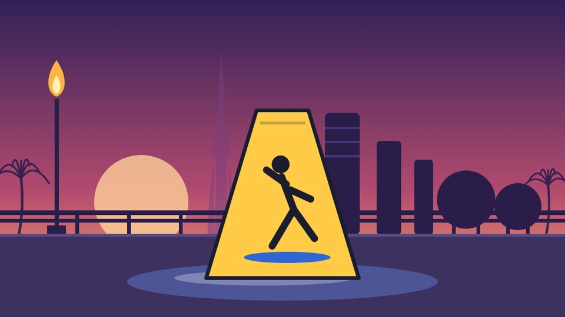
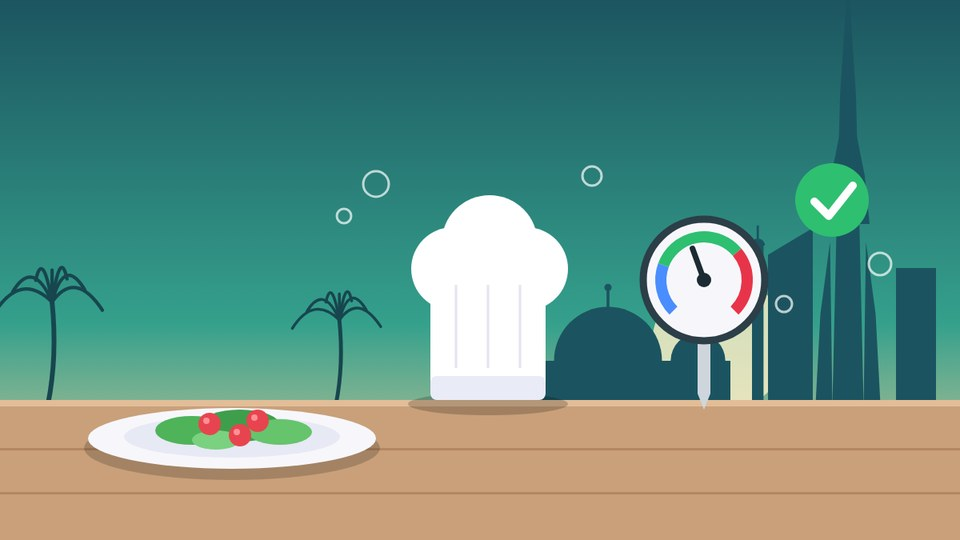

I design and develop interactive digital learning experiences that combine strong visual design, meaningful interactions, and emerging technologies. I'm also building AI-powered tools and workflows that improve how e-learning is designed, developed, tested, and delivered.
I'm a Lead E-learning Developer with hands-on experience building interactive learning for organizations in aviation, energy, banking, healthcare, food safety, and corporate environments. My core tools are Storyline 360, Rise 360, Adobe Captivate, and iSpring Suite.
My background also spans graphic design, motion design, UI/UX, and project management, so I look at every project from several angles. Lately my focus has moved to AI-powered development: solving real problems in the e-learning production process.
Turning content, storyboards and requirements into polished, LMS-ready courses: scenarios, compliance, safety, assessments, software and process training.
Storyline 360Rise 360CaptivateiSpringVisual hierarchy, layout, typography, iconography, image treatment, motion and learner navigation.
PhotoshopIllustratorAfter EffectsFigmaMoving beyond AI for content creation, toward AI as part of the development workflow itself: QA, automation, prototyping, visual production.
AI images & videoWorkflow automationPrompt engineeringComplex, policy-heavy and safety-critical content, turned into clear and usable learning.
Introduces learners to airside safety practices through structured content, visual communication, interactions and knowledge checks.
Storyline development, interactions, visual implementation, animation, multimedia, QA, final prep.
Storyline 360Induction
Helps learners spot common workplace hazards and apply practical prevention, using visual storytelling and knowledge checks.
Storyline development, interactive content, animation, knowledge checks, troubleshooting, delivery.
Storyline 360Adobe CCPresents compliance-heavy privacy principles and responsible information handling in a clear, accessible format.
Interactive development, UI and visual implementation, content integration, QA, delivery.
Storyline 360ComplianceTurns policy-heavy information into a structured experience on recognizing conflicts and understanding disclosure.
Storyline development, interactions, animation, knowledge checks, testing and QA.
Storyline 360Decision making
Transforms detailed prevention and safe-practice information into an accessible learning journey with visuals and interactions.
E-learning development, interactions, multimedia, knowledge checks, QA.
Storyline 360PreventionMultiple courses on compliance, privacy, workplace responsibilities and policy, making complex business information clear and engaging.
Storyboard interpretation, development, UI, activities, knowledge checks, multimedia, QA, production.
CompliancePolicyTwo projects, told from the inside: what the brief was, how we worked, and what I did.
An interactive course that teaches the WHO handwashing technique to people working on ships, then lets them practise it in a 3D simulation that gives feedback on how they did.
We didn't wait for a finished storyboard. Once the first two or three slides were ready, we walked the client through them, took feedback on the spot, and I started building while the instructional designer carried on with the next set. Unity ran in parallel: our Unity developer began modelling the hands and other 3D assets while the storyboard was still being written, and a separate tracker listed every asset and which ones depended on others. The client reviewed the assets, then the environment outline I set up, then downloaded builds of the simulation as each scenario came together. Because feedback came right after each chunk instead of at the end, there was no big rework phase and no change in scope. It was our first Unity project, and the client's quick turnaround on reviews helped us finish a month ahead of the plan.
A 3D, game-style e-learning module for company drivers. Learners follow a driver through a working day, from the building entrance to the road, and then face a breakdown where the right steps matter more than speed. The client is confidential, so no names or branding appear here.
Teach drivers what to do when a vehicle gets stuck, breaks down or an emergency happens on the road. It is procedural, safety-critical content: the order of the steps matters, and the first instinct (trying to fix the truck yourself) is the wrong one. Reading a list of rules would not be enough, so the module puts the driver inside the situation in a fully 3D environment with characters and vehicles.
Starting the module at the start of the shift gives the emergency a believable context. By the time the truck stops, the learner already knows the building, the people and the route.
I wrote the scenarios and the scenes myself and took the client through the storyboard slide by slide. The content was accepted with very few changes. The ones that came back were small details specific to how the company does things, and I worked those into the storyboard and the module. I also designed the character and vehicle samples, then coordinated with the freelance Unity developer who built the 3D work. As the project manager I reviewed the finished module and acted as QA. It was my second project as a project manager.
The question I start with: what should the learner be able to understand or do after this?
Learning objective, audience, content and requirements.
Logical flow, plus where interactions, scenarios, visuals, checks and multimedia genuinely help.
Layout, typography, hierarchy, UI, navigation, imagery, icons, animation and interaction patterns.
Functional, intuitive, visually consistent and learner-focused builds.
Navigation, interactions, visuals, animation, content, broken states, audio/video and responsiveness.
After QA and reviews, the final package is prepared for deployment.
I've worked extensively with AI-generated images and video for e-learning production. That led to a bigger question: not just better assets, but a better way of building courses.
Standalone tools that solve real workflow problems: content preparation, development assistance, QA, visual production, productivity and automation. I start with the problem, not the trend.
Tools and workflows that make learning development faster, smarter and more scalable.
AI imagery, video and visual storytelling for digital learning.
Practical AI-powered apps for specific workflow problems.
Moving from individual courses to reusable tools and products for learning teams.
Turning a still image into a video clip takes minutes. Keeping dozens of clips looking like the same film is the hard part. This is the process I use to keep characters, settings and style consistent in corporate training video, and to plan the credits it takes.
AI video drifts. A clean-shaven character grows a beard halfway through a clip. The render style slides towards photorealism by the last second. A prop appears in someone's hand. In training content that matters: viewers notice, reviewers send the clip back, and every regeneration costs credits against a deadline. With large numbers of clips and tight turnarounds, failures and redos are part of the plan, not a surprise.
Two small tools came out of the same problems. The Shot Prompt Builder inserts saved character and style text into every prompt. The Video Credit Planner works out credits, redos and daily targets for a batch.
Meaningful interactions, not just information on screens.
Design principles that make complex information easier to understand.
Sophisticated interactive courses in Storyline 360.
Design, development, requirements and learner experience, together.
Practical ways to bring AI into learning and development.
Breaking complex production problems into achievable solutions.
Built interactive courses and developed expertise in industry-standard authoring tools.
Expanded into visual design, motion, image creation and UI/UX.
Coordinated projects, requirements, deliverables and cross-team work.
More ownership of technical execution, quality and delivery.
Exploring how AI can create better learning and more efficient workflows.
Good e-learning isn't about more animations or interactions. It's about making the right information easier to understand, remember, and apply.
Technology should support the learning objective. Design should support the learner. Interactions should have a purpose. And AI should solve real problems.
Beyond my full-time role, I take on freelance e-learning projects and consulting engagements for companies that want better digital learning, whether that's one course, a fix for a messy process, or a smarter way to produce content.
End-to-end builds from your storyboard or content.
An experienced second opinion on how your learning gets made.
Fewer errors, faster reviews, more consistent output.
Practical AI workflows, not hype.
Designs learners can actually follow.
Available for freelance projects, e-learning consulting and full-time roles. Fill this in and I'll turn it into a ready-to-send email, so you don't have to start from a blank page.